CrossingCrossing of connections |

|
Information
This information is part of the Modelica Standard Library maintained by the Modelica Association.
This is a simple short cut branch.
See also
Idle Short Magnetic.FundamentalWave.Components.Idle, Magnetic.FundamentalWave.Components.Short, Magnetic.FundamentalWave.Components.Crossing
Connectors (4)
| port_p1 |
Type: PositiveMagneticPort Description: Connected with port_p2 |
|
|---|---|---|
| port_n1 |
Type: NegativeMagneticPort Description: Connected with port_n2 |
|
| port_p2 |
Type: PositiveMagneticPort Description: Connected with port_p1 |
|
| port_n2 |
Type: NegativeMagneticPort Description: Connected with port_n1 |